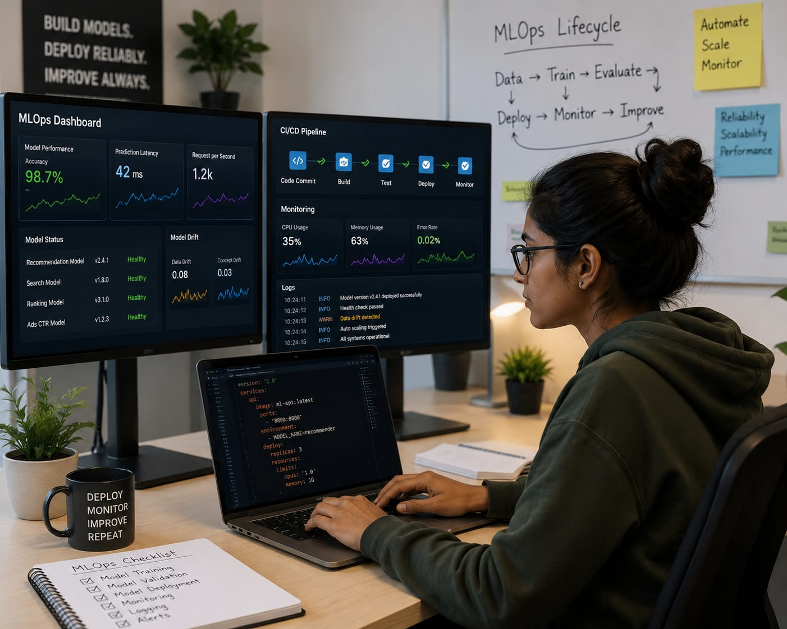

- Imagine you open YouTube and start watching videos you like.After sometime,you started seeing similar videos.
- Millions of people who use YouTube are getting their favourites videos like this.
- Behind the scenes, an AI system is working to make sure all these people are getting the videos they enjoy.
- The person who manages and maintains this AI system is called an MLOps Engineer.
- 👉 In simple words: MLOps Engineers keep AI systems running smoothly.
MLOps Engineer
🧑💻 What Do They Do?

🎓 How to Become an MLOps Engineer
These beginner-level courses help students learn programming, computer systems, cloud computing basics, networking, automation, and DevOps fundamentals.
Diploma in Computer Science & Engineering (Cloud Computing)
Duration: 3 Years
Eligibility: Class 10 Pass
Entrance Exam: Polytechnic Entrance Exam / Merit-Based Admission
Diploma in DevOps & Cloud Technologies
Duration: 1 – 2 Years
Eligibility: Class 10 Pass
Entrance Exam: Direct Admission / Institute-Level Test
📝 Exam Details
(Click on the exam name to see full details)
Polytechnic Entrance Exam Merit-Based Admission Direct Admission Institute-Level TestNote: Many MLOps Engineers improve their skills by learning Linux, Python, cloud platforms, automation tools, and working on real-world projects.
These degree programs help students learn software development, cloud computing, DevOps practices, automation, system administration, and large-scale infrastructure management.
B.Tech in Computer Science Engineering (Cloud Computing & DevOps)
Duration: 4 Years
Eligibility: 10+2 with Physics, Chemistry, and Mathematics
Entrance Exam: JEE Main / State Engineering Entrance Exams
Bachelor of Computer Applications (BCA) in Cloud Systems & DevOps
Duration: 3 Years
Eligibility: 10+2 Pass (Any Stream)
Entrance Exam: CUET-UG / State-level CET / University Merit
B.Sc. in Cloud Computing & Infrastructure Management
Duration: 3 Years
Eligibility: 10+2 Pass
Entrance Exam: CUET-UG / State-level CET / Merit-Based Admission
📝 Exam Details
(Click on the exam name to see full details)
JEE Main State Engineering Entrance Exams CUET-UG State-level CET University MeritNote: Many future MLOps Engineers start with Computer Science, Cloud Computing, or DevOps programs and later specialize in automation, cloud platforms, and machine learning deployment.
These programs help diploma holders move into advanced cloud, DevOps, automation, and infrastructure management roles. Students learn how to manage large-scale systems used in modern software and AI applications.
B.Tech Lateral Entry (Cloud Computing / DevOps / Software Systems)
Duration: 3 Years
Eligibility: Diploma in Engineering (CSE, IT, or Electronics)
Entrance Exam: State Lateral Entry Exam
BCA Lateral Entry (Cloud Systems & DevOps)
Duration: 2 Years
Eligibility: Diploma in CSE, IT, or Computer Applications
Entrance Exam: Merit-Based Admission / University Entrance Exam
B.Sc. Lateral Entry (Cloud Computing & Infrastructure)
Duration: 2 – 3 Years
Eligibility: Relevant Diploma in Computer Science or Information Technology
Entrance Exam: Merit-Based Admission / University Entrance Exam
📝 Exam Details
(Click on the exam name to see full details)
State Lateral Entry Exam University Entrance Exam Merit-Based AdmissionNote: Diploma holders can directly enter the second year of many degree programs and later specialize in Cloud Computing, DevOps, Automation, and MLOps technologies.
These advanced programs help students specialize in cloud infrastructure, automation, DevOps, machine learning deployment, and large-scale production systems used by modern technology companies.
M.Tech in Cloud Computing & Automation
Duration: 2 Years
Eligibility: Graduate (B.Tech/B.E. in CSE/IT or MSc/MCA with valid GATE score)
Entrance Exam: GATE / University Entrance Exams
Post Graduate Program in MLOps & AI Infrastructure
Duration: 6 – 12 Months
Eligibility: Graduate (Engineering, BCA, or BSc CS with basic coding knowledge)
Entrance Exam: Direct Admission / Merit-Based Interview
Professional Cloud MLOps Certification (AWS / Google Cloud / Azure)
Duration: 1 – 3 Months
Eligibility: Graduate or Working Professional
📝 Exam Details
(Click on the exam name to see full details)
GATE University Entrance Exams Direct Admission Merit-Based AdmissionNote: Most MLOps Engineers begin with Computer Science or IT degrees and later specialize in cloud platforms, DevOps tools, automation, and machine learning deployment through advanced programs and certifications.
Note:
Age limits, marks, and admission process may vary depending on the college or state.
These courses are available in many colleges and universities across India.
You can choose colleges based on your location, budget, and entrance exams.
🏛️ Top Colleges for MLOps Engineering
(Tap on a college to view the details)
📜 After 10th Pass (Diplomas & Cloud/DevOps Foundations)
PSG Polytechnic College, Coimbatore Government Polytechnic College, Kalamassery Lovely Professional University (LPU), Phagwara Guru Nanak Dev Institute of Technology, Delhi JSS Polytechnic, Mysore🎓 After 12th Pass (Bachelor's Degrees)
Indian Institute of Technology (IIT) Hyderabad Indian Institute of Technology (IIT) Bombay, Mumbai International Institute of Information Technology (IIIT), Hyderabad Birla Institute of Technology & Science (BITS), Pilani Vellore Institute of Technology (VIT), Vellore Amity University, Noida↪️ After Diploma (Lateral Entry)
Delhi Technological University (DTU), New Delhi Jadavpur University, Kolkata Anna University, Chennai Thapar Institute of Engineering and Technology, Patiala PSG College of Technology, Coimbatore🏢 After Graduation (Master's Degrees & Advanced Infrastructure Stacks)
Indian Institute of Science (IISc), Bengaluru Indian Institute of Technology (IIT) Delhi, New Delhi Indian Institute of Technology (IIT) Madras, Chennai International Institute of Information Technology (IIIT), Bangalore National Institute of Technology (NIT), TrichySTEP 1
Imagine you are working as an MLOps Engineer in a company.
STEP 2
Your company has an online shopping app that uses AI system to recommend products to its users.
STEP 3
You job is to help connect this AI system to the shopping app, so people can use it.
STEP 4
You monitor the system and make sure it is working properly every day.
STEP 5
Millions of users continue receiving product recommendations because the AI system is running smoothly.
STEP 6
If you enjoy technology, coding, cloud systems, and solving problems, this career may suit you.
Where do MLOps Engineers work? (Job Roles + Growth)
These are some roles you can explore in MLOps and AI Infrastructure.
You usually start with beginner roles and grow with experience.
🟢 Beginner Roles
📦
Junior MLOps Engineer
(After Short-Term Course / Diploma / Certification)
Packages machine learning models and prepares them for deployment.
🖥️
ML Infrastructure Support Associate
(After Diploma / Certification)
Monitors cloud servers and supports AI infrastructure systems.
☁️
Cloud Operations Assistant
(After Diploma / Graduation)
Helps manage cloud resources used by AI applications.
🔍
Deployment Support Assistant
(After Online Course / Graduation)
Tests AI deployments and checks for system issues.
🔵 Mid-Level Roles
⚙️
MLOps Engineer
(After BCA / B.Tech / BSc CS + Experience)
Builds and maintains automated deployment pipelines for AI systems.
☁️
Cloud AI Engineer
(After Cloud & DevOps Training + Experience)
Manages cloud platforms that host machine learning applications.
📈
ML Reliability Engineer
(After Infrastructure Training + Experience)
Improves system stability and monitors model performance in production.
🚀
DevOps Engineer (AI Systems)
(After DevOps Training + Experience)
Automates software delivery and deployment processes for AI products.
🟣 Advanced Roles
🏗️
ML Platform Architect
(After MCA / M.Tech + Experience)
Designs large-scale AI infrastructure and cloud platforms.
🎯
Director of MLOps
(After Postgraduate Program + Experience)
Leads AI infrastructure teams and deployment strategy.
👨💼
Head of AI Infrastructure
(After Senior MLOps Experience)
Oversees enterprise AI platforms, cloud systems, and operations.
☁️
Cloud Computing Companies
Manage cloud platforms that host machine learning and AI applications.
⚙️
DevOps & Infrastructure Companies
Build automated deployment systems and monitor large-scale software platforms.
🤖
Artificial Intelligence Companies
Deploy, monitor, and maintain AI systems used by millions of users.
📊
Data & Analytics Companies
Manage infrastructure that supports data processing and machine learning pipelines.
🌐
Remote MLOps Jobs
Support AI infrastructure and cloud platforms remotely for global companies.
🏭
Technology, Robotics & Automation Companies
Maintain AI systems used in automation, robotics, and smart technologies.
(Click Yes or No for each question)
1. When millions of people use apps like YouTube every day, have you ever wondered how everything works smoothly behind the scenes?
2. Are you interested in learning how large apps and websites stay fast and run smoothly for millions of users?
3. When you use YouTube, have you noticed that it usually shows your favourite videos?
4. When YouTube shows your favourite videos, have you ever thought, "I want to know how this is done?"
5. Imagine an online shopping app uses AI to recommend products to users. Your job is to make sure this AI system keeps running smoothly so millions of people continue getting recommendations. Does this excite you?